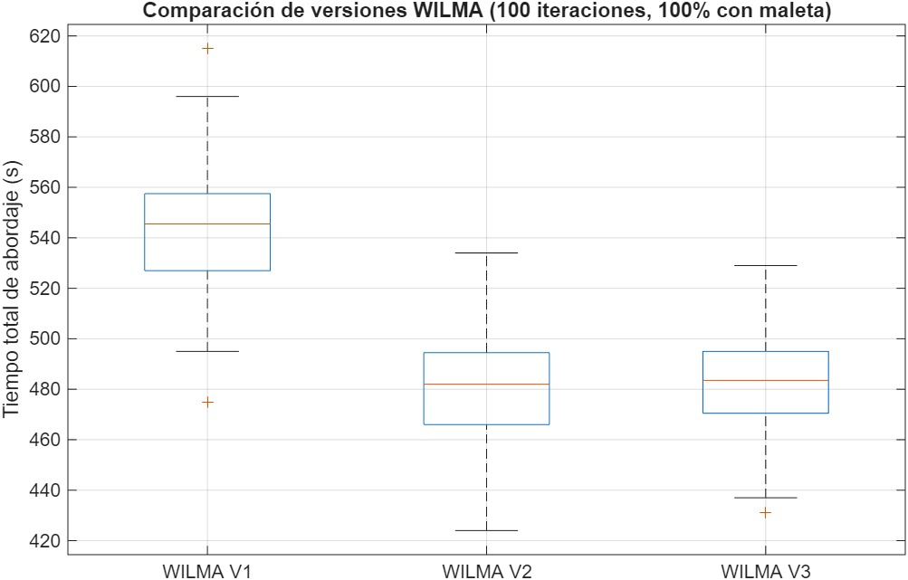

El abordaje representa uno de los principales cuellos de botella en el turnaround
Pasajeros con Movilidad Reducida
+3.09 min
Tiempos adicionales para asistencia y manejo de sillas de ruedas
Sobreventas y Errores
+2–5 min
Cambios de asiento interrumpen la secuencia y causan retrasos.
Pasajero Faltante
+4–8 min
La localización y retiro de equipaje generan demoras significativas.
Interferencias en el Pasillo
+6.75 min
Equipaje de mano y bloqueo por asientos desordenan el avance.
Métodos de Abordaje Simulados
Comparación entre el método actual y las variantes WILMA
Método Actual (Viva)
14.88 min
Ingreso por bloques, basado en filas y letras específicas
WILMA 1
9.22 min
De ventana a pasillo, separando filas delanteras y traseras.
WILMA 2 (Ganador)
8.13 min
Cruza lados A-F y B-E, alternando filas frontal-trasera.
WILMA 3
8.16 min
Orden simple por letra: A, F, B, E, C, D.
Códigos MATLAB
8 módulos de simulación desarrollados para el análisis
🎯 main_simulation
function main_simulation(numIter, pctLuggage)
% MAIN_SIMULATION Ejecuta múltiples simulaciones y compara solo WILMA V1–V3
% Inicializar resultados
time_v1 = zeros(1, numIter);
time_v2 = zeros(1, numIter);
time_v3 = zeros(1, numIter);
...
👥 generate_passengers
function passengers = generate_passengers(pctLuggage)
% GENERATE_PASSENGERS Genera los pasajeros para un A320 con 30 filas y 6 columnas
% pctLuggage: proporción (entre 0 y 1) de pasajeros con maleta
numRows = 30;
seatsPerRow = 6;
totalPassengers = numRows * seatsPerRow;
maxLuggage = 100;
🔄 sort_wilma_1
function boardingOrder = sort_wilma_v1(passengers)
% Nuevo WILMA V1 basado en zonas específicas por columna y fila
% Datos base
rows = [passengers.Row];
seats = {passengers.Seat};
% Funciones auxiliares
is_seat = @(letters) ismember(seats, cellstr(letters'));
in_row_range = @(r1, r2) rows >= r1 & rows <= r2;
% Zona 1+2: PRIORITY filas 1–7
z1 = in_row_range(1, 7); % todas las letras
🏆 sort_wilma_2
function boardingOrder = sort_wilma_v2(passengers)
% WILMA V2 basado en zonas cruzadas por fila y letra
rows = [passengers.Row];
seats = {passengers.Seat};
is_seat = @(letters) ismember(seats, cellstr(letters'));
in_row_range = @(r1, r2) rows >= r1 & rows <= r2;
% Zona 1+2: PRIORITY filas 1–7
🎲 sort_wilma_3
function boardingOrder = sort_wilma_v3(passengers)
% WILMA V3: Orden por columna (A–F) de filas 7 a 30
rows = [passengers.Row];
seats = {passengers.Seat};
is_seat = @(letters) ismember(seats, cellstr(letters'));
in_row_range = @(r1, r2) rows >= r1 & rows <= r2;
% PRIORITY: filas 1–7
📊 visualize_boarding
function visualize_boarding(method, pctLuggage)
% Simulación con círculos con color y número visible
numRows = 30;
aisleX = 4; % Pasillo visual entre C y D
speedFactor = 2;
% Crear pasajeros
passengers = generate_passengers(pctLuggage);
if strcmpi(method, 'random')
order = sort_random(passengers);
elseif strcmpi(method, 'wilma')
order = sort_wilma(passengers);
else
error('Método debe ser "random" o "wilma".');
end
📈 simulate_boarding
unction simulate_boarding(method, pctLuggage)
% VISUALIZE_BOARDING Simula el abordaje con visualización gráfica
% method: 'random', 'wilma1', 'wilma2', 'wilma3'
numRows = 30;
aisleX = 4; % posición X del pasillo para visualización
speedFactor = 8;
% Crear pasajeros
passengers = generate_passengers(pctLuggage);
% Elegir método de abordaje
switch lower(method)
case 'random'
order = sort_random(passengers);
case 'wilma1'
order = sort_wilma_v1(passengers);
case 'wilma2'
⚖️ simulate_boarding_backend
function totalTime = simulate_boarding_backend(passengers)
% SIMULATE_BOARDING_BACKEND Simula el abordaje y devuelve el tiempo total (sin gráficos)
numRows = 30;
aisle = zeros(1, numRows);
seatedCount = 0;
totalPassengers = length(passengers);
nextToEnter = 1;
t = 0;
% Inicializar estado de cada pasajero
for i = 1:totalPassengers
passengers(i).Status = "waiting";
passengers(i).Position = -1;
passengers(i).TimeRemaining = 0;
end
Resultados de la Simulación
Análisis comparativo de 100 iteraciones por método
Comparación de Tiempos

Impacto Económico
Proyección de ahorros con la implementación de WILMA 2